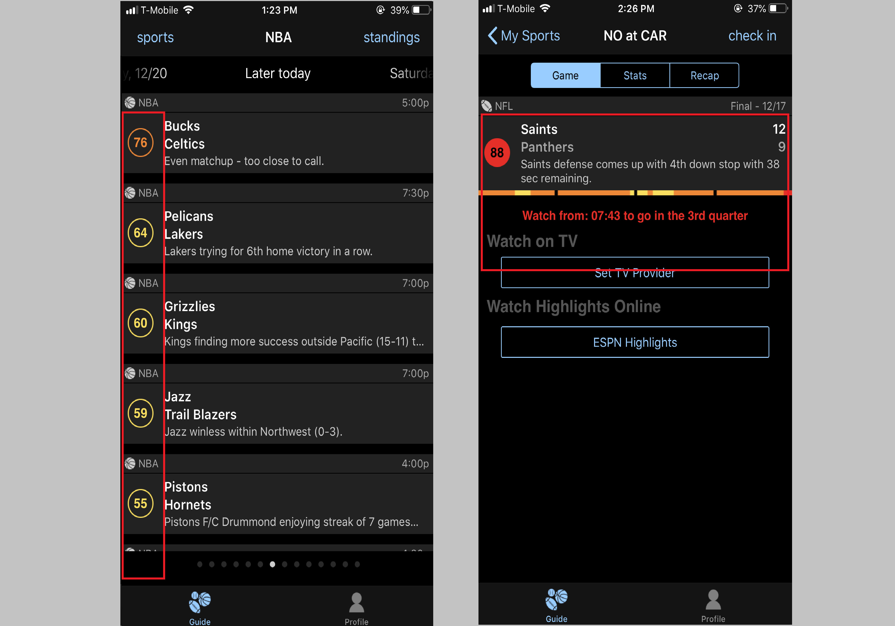
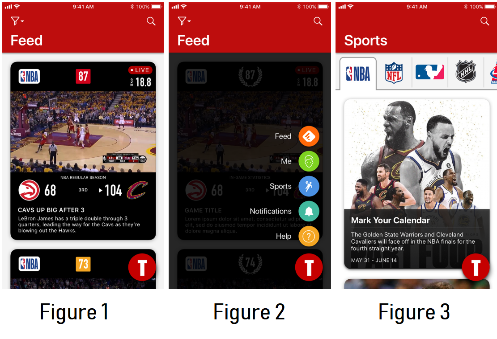
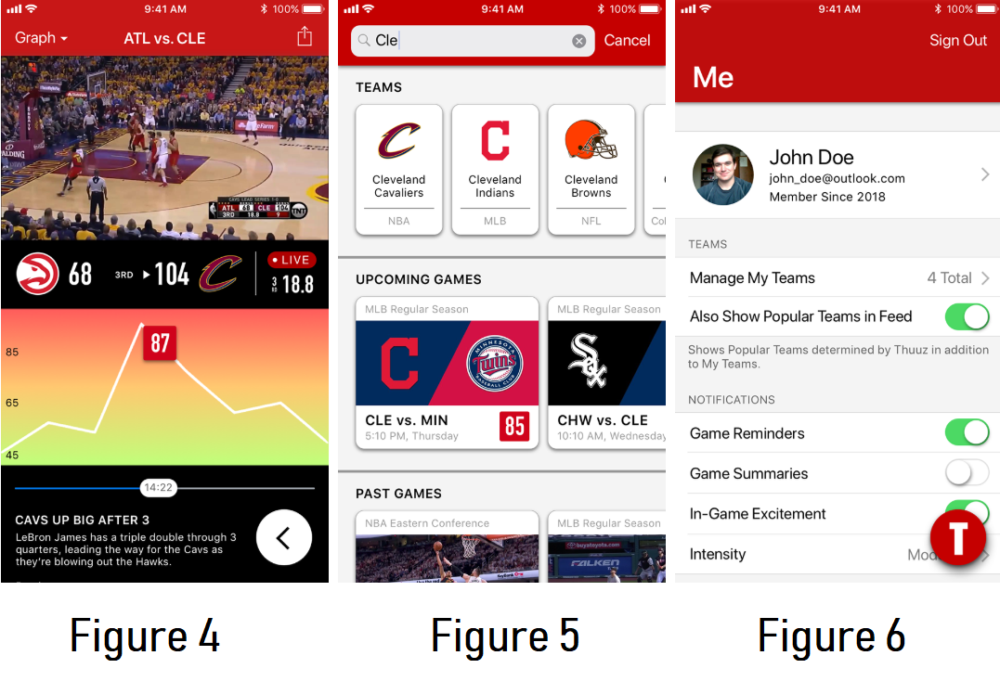
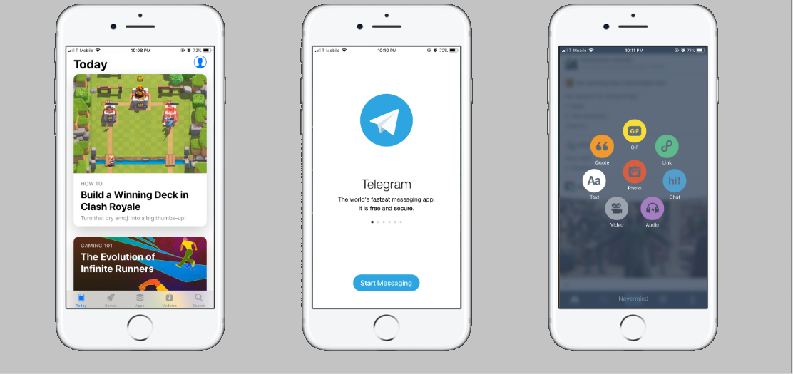

Overview
As a part of a project course, we were tasked to redesign an existing application, Thuuz Sports, through the use of Human-Computer Interaction principles. The emphasis was to improve the way in which users were experiencing the application and to justify our redesigns based on evidence-based design.
The App: Thuuz Sports
Thuuz is a mobile sports application that provides its users with game statistics and highlights of their favorite sports. However, the app differentiantes itself from its competitors with an unique algorithm that determines the excitement of games and ranks them based on a numerical scale from 0-100. Although it is a promising feature, it is unfortunately masked by the various usability issues found through user research our team conducted.
Usability Issues
Information overload
Users were overwhelmed and confused with the amount of information being presented. For example, too many games were being displayed in the home page. Information was not paraphrased in the game previews.

Bad use of fonts & color
Users had a hard time with the representation of buttons and fonts, which led users to be unable to find buttons for the actions they were looking for. For example, it is hard to see the "No, maybe later" option because it is in a small font, the font color does not contrast with the background, and it is placed at the bottom of the screen.

Counter-intuitive navigation
The navigation of the application has several aspects that are counter-intuitive and do not follow industry standards, which caused confusion in our users. For example, the user had no indication they could swipe left or right on the homepage to navigate to future game dates, since the indicators at the bottom of the page are hard to see. Our users pointed out that the labels for the dates were displayed in inconsistent formats. Also, they were unsure where buttons like "My Sports" and "check in" would lead them to.

Confusion of Excitement Score
Users did not find the excitement score easily and questioned the purpose of it. This is significant because the excitement score is the feature that sets it apart from other competitors, yet it is muddled by all the present usability issues. Furthermore, our users could not find additional information in the game page that explained the match's current excitement score.
Prototypes
Our redesign
 As a way to alleviate some of these issues, we came up with the following redesign goals:
Present the right information
The original design crowded too much information within the homepage. Our new design separates and prioritizes information as seen in Figure 2. This allows users to find what they're looking for almost immediately. In addition, we added an universal search functionality, which also allows users to make searches and a filter option in which they can choose what information they want to see on their feed.
Visual consistency of elements
In all of the above figures, we used universal titles that are recognizable to users, and we adhered to standard iOS design guidelines for placement of buttons.
Make navigation clear & simple
As seen in Figure 2, we created a vertical pop-up menu which the user can access at all times by clicking the T bubble at the bottom right corner.
Emphasize excitemet score
As seen in Figure 4, we created a chart that improves the display of the excitement score calculated throughout the game. Users would now be able to better understand the score and how it fits with the game they are watching.
Inspiration and Motivations
We adhered to Nielsen's Heuristics when designing the new interface and took inspiration from the following applications: Tumblr, and the App Store (iOS). Tumblr has a quick and easy-to-use, pop-up navigation for posting content which users can access any time. The App Store displays its content through the use of card-like tiles which present information in a clear and minimal way.